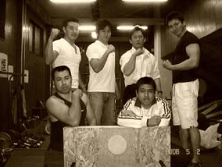

漢塾と根性屋の出会いは、根性屋を立ち上げ一年を過ぎた頃になる。活動目的アームレスリングとは掲げているものの本当のところ何をしたいのか？どういう活動団体にするのかアームレスリングだけにするのかと悩んでいるところに、ある一つのＨＰと出会うことに！そうそれがこの漢塾だったのだ！
漢塾の活動、これこそが私が目指していた活動目的に近いものだった。私は感激のあまりすぐに漢塾塾長にメールを、あれよあれよという間もなく漢塾、根性屋の固い絆は結ばれた！！


二度目の萩へと訪れました。今回は二回目の合同イベント打ち合わせ会も兼ねた懇親会となりました。漢塾塾長の実家、自宅へもお招きいただき有意義な時間を過ごせられました。今回の萩での滞在は漢塾との絆はもちろん萩の町の奥深さを知ることができ何故か心が清らかになるような気持ちになりました。
 |
ここが漢塾が寒中水泳を行う菊ヶ浜海水浴場だ。今回お互いのオリジナルＴシャツを着込んでの交流会に臨んだ。 |
| 今も萩ではカリスマ的な英雄である高杉晋作を称える石碑。萩の若者は高杉晋作の男気に憧れ育つという。萩の民謡‘男なら’の歌詞にはこの高杉晋作を偲ばせる部分が多々あるという。 |  |
 |
今回はこの吉田松陰の偉大さを学ぶことができました。僅か３０歳の若さで亡くなった吉田松陰という人は今も萩の町では民の先生であり生き続けている。そして萩に住む人々を見守ってくれているような気がしました。 |
| 今回も大きな絆が深められた漢塾と根性屋！今回のテーマは‘絆’。吉田松陰の残した言葉は今も萩市の小学校で朗唱されている。この言葉は当時わからない内容もあるが大人になった時に声をだし朗唱していたこともあってある節目に言葉を思い出しこのことだったのかと思うことがあるという。人間の生きる心の糧というものをこの言葉は教えてくれているという。そして声にだして読むということの大切さも教えてくれている。と語っていただいた漢塾塾長の目はとても澄んでいました。 |  |

友達と交わるには真心をもって善に導くようにすすめることは言うまでもない
松陰先生の言葉より
 |
追伸 塾長、sueさんそして塾長さんのご両親、奥様本当にご親切な御もてなしをありがとうございました。今回も私、嫁共々でおしかけすみませんでした。今回も二人ともまた新しい萩での良い思い出ができたと喜んでおります。今後ともよろしくお願いいたします。ありがとうございました！！

 |
そして交流会もさっそくはじまった！漢塾が活動する地は山口県は萩市、名高い長州の城下町を歩けるということだけでもうれしいことであり歴史好きの私にとってこの上なくすばらしいところであります。 |
 |
先ずは漢塾塾長、漢塾参謀の末さんが萩市内の観光へと案内してくれた！ここはかの吉田松陰の私塾であった松下村塾、数々の維新を代表する人物がここで学んでいたという。萩市は今でも幕末の色の濃さを残す地であります！ |
 |
人の縁とは不思議なものです。漢塾、根性屋というものがなければ知り合うことがなかった遠くの地の友、しかも互いに強く引き寄せられるこの絆、漢塾、根性屋がこの世で続く限り壊れることはないと私は確信いたしました！！ |
 |
今回の交流会本当にお世話になりました！嫁共々でおしかけすみませんでした。良い旅行になったと２人とも大変喜んでいます！漢塾塾長！末さん！漢塾の関係の皆様方色々ありがとうございました！！ |
根性屋がここまで前進できたのは、漢塾のおかげだ！これはこれからも変わることはない！何事をもするのでも必ず初心を忘れてはいけない！人間が狂いだすのは初心を忘れることにあると私は思う！